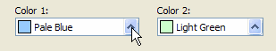
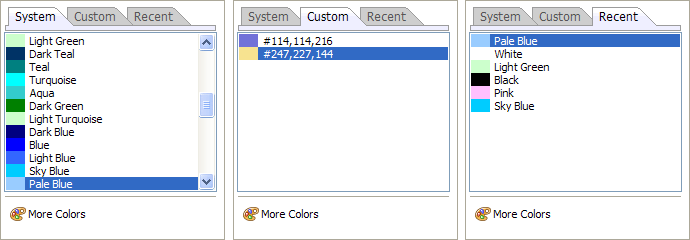

Defining a Border or Fill Color
To select a color:
Click
 to open the color list.
to open the color list.

Select one of the three tabs that appear.
The System tab lists colors defined by Alpha Anywhere
The Custom tab lists colors that you have defined
The Recent tab lists colors that you have selected during this session

To define a custom color, click
 More Colors to display the Color Picker dialog.
More Colors to display the Color Picker dialog.Select a color.
Limitations
Desktop applications only.
See Also